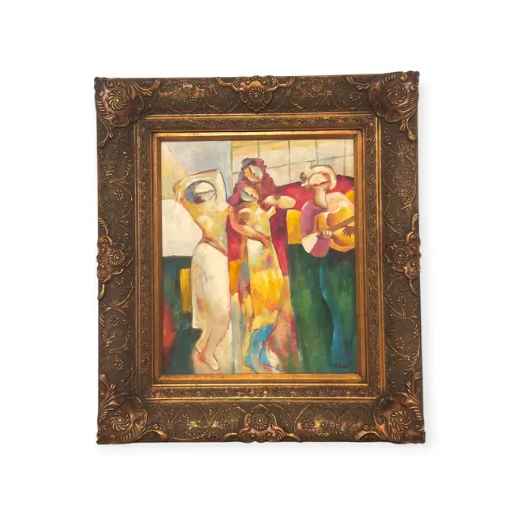
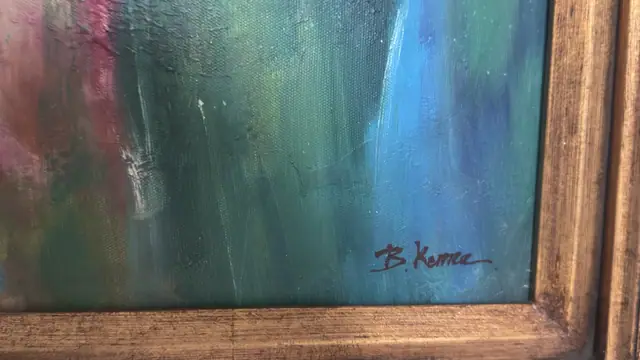
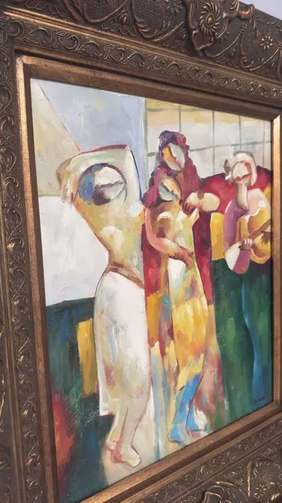
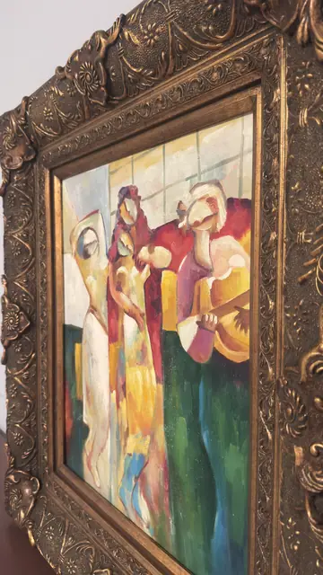
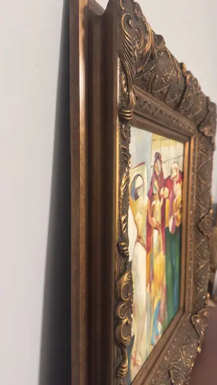

Paintings & Prints
Cubist Group of Figures with Musician, B. Kemer, Signed, Framed
B. Kemer · late 20th to early 21st century
Price Upon Request





About the Item
B. Kemer. Four attenuated figures with mask-like faces - blank oval heads, one enormous almond eye apiece - stand close together against a pale gridded window. The nearest is a slender nude in bone-white and cream; behind her, figures in crimson, chrome yellow and rose crowd forward, and at the right one cradles a lute or mandolin. The lower half of the canvas turns into broad slabs of forest green, teal, crimson and gold, so the bodies seem to rise out of a field of colour. The paint is loaded and worked with a knife as much as a brush, with visible ridges and scraped edges. Medium: oil on canvas. Signed lower right of the canvas, in dark red-brown over the green passage, reading "B. Kemer". Inscribed on the reverse or mount: B. Kemer (painted signature, lower right). Condition: Paint surface intact with no flaking or losses seen. A small white scuff or paint fleck sits in the green passage near the signature. The gesso ornament on the frame shows light rubbing on the high points, consistent with its antiqued finish.
Details
- Creator:
- B. Kemer
- Creation Year:
- late 20th to early 21st century
- Dimensions:
- Height: 35.6 in (90.42 cm)
Width: 30.8 in (78.23 cm)
outside of frame - Medium:
- oil on canvas
- Period:
- 21St
- Condition:
- Offered in the condition shown in the photographs.
- Reference Number:
- VO-125
- Documentation:
- no certificate photographed
- Gallery Location:
- B. Kemer (painted signature, lower right)